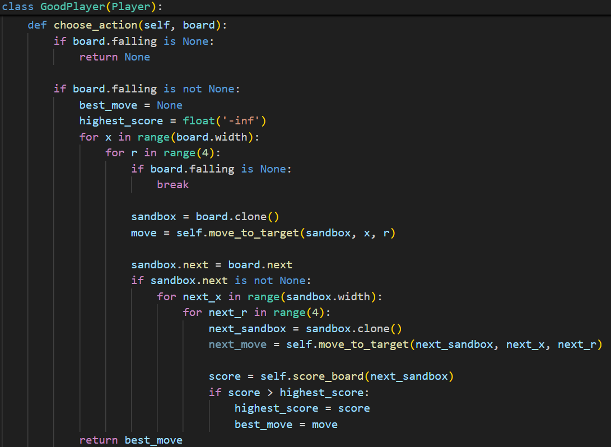

Projects
Givabit
GivaBit is a blockchain-based content monetization platform on the Avalanche C-Chain. I built the GivaBit Server, which creates and manages payment-gated links through smart contract interactions and an SQLite registry. It supports secure link creation, short-code generation, and essential lifecycle operations such as access handling and link-status updates.

Lost & Found Platform
Developed during Minerva’s Hack, this platform combines OpenCV-based image recognition, NLTK-powered natural language processing, Cloud Firestore, and Google Maps API to match lost items with reported findings. The project was shortlisted as one of the top four solutions out of twelve teams, recognised for its practical design and technical execution.
Architecture diagram:
Frontend → API Server → ML Pipeline → Database
(React) (Flask) (CV/NLP) (Firestore)
Model Choices and Reasoning
- Visual features (OpenCV): ORB/SIFT-style keypoints for speed + robustness to scale/lighting; good fit for mobile photos with varied backgrounds.
- Text signals (NLTK): Lightweight keyword/TF-IDF to leverage user captions (“black North Face puffer”, “AirPods Gen 3 case”).
- Scoring: Weighted fusion of image similarity + text overlap; tuned on hackathon set for high precision in top-3 results.
- Infra: Cloud Firestore for low-latency queries; Google Maps API to factor geospatial proximity into ranking.
Examples of successful object matches
- AirPods case: Matched finder’s photo (indoor yellow lighting) to owner’s upload (daylight) via ORB keypoints on the hinge + embossed text; caption overlap “Gen 3” boosted rank to #1.
- Black puffer jacket: Differentiated among three similar jackets using zipper pull shape + logo position; caption “women’s S” narrowed candidates.

Tetris AI Bot
Problem Summary
Built a Tetris AI that places incoming tetrominoes to maximize line clears under strict runtime limits and a vanilla-Python environment (no external libs). Implemented a fast board simulator plus scoring heuristics to evaluate all rotations/positions per piece.
State Evaluation Pipeline:
┌──────────────────┐
│ Current Board │
│ (game state S) │
└─────────┬────────┘
│
▼
┌──────────────────┐
│ Generate All │
│ Possible Actions │
│ (rotations/slots) │
└─────────┬────────┘
│
▼
┌──────────────────┐
│ Simulate Resulting│
│ States (S1...Sn) │
└─────────┬────────┘
│
▼
┌──────────────────┐
│ Evaluate Features │
│ e.g.: │
│ - board height │
│ - holes │
│ - bumpiness │
│ - lines cleared │
│ - transitions │
└─────────┬────────┘
│
▼
┌──────────────────┐
│ Apply Heuristic │
│ H(Si) = w • f │
│ (weighted scoring)│
└─────────┬────────┘
│
▼
┌──────────────────┐
│ Select Best Move │
│ argmax_i H(Si) │
└──────────────────┘
Key Results
- Peak score: 20737; median: 16636 over 5 runs.
- Outperformed baseline random/greedy by 4122% on game score.
- Move evaluation throughput: 1.8 placements/second on 12th Gen Intel(R) Core(TM) i7-1255U.
- Heuristic ablation: removing “holes” penalty ↓ performance by 81%.
Code snippet of game move logic:
